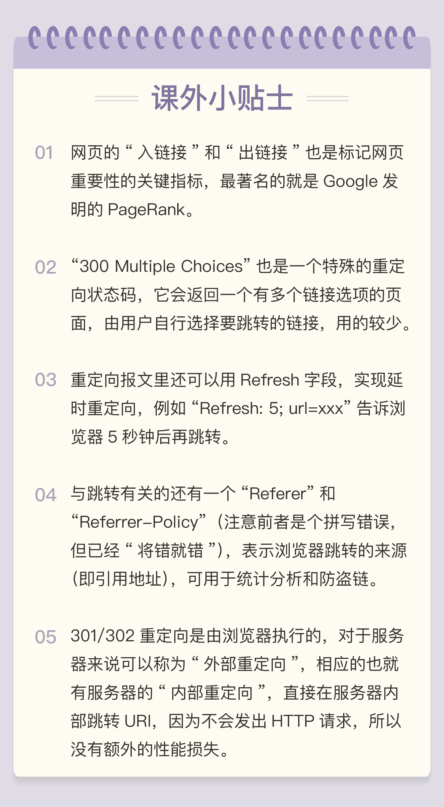

- 00 开篇词｜To Be a HTTP Hero.md.html
- 01 时势与英雄：HTTP的前世今生.md.html
- 02 HTTP是什么？HTTP又不是什么？.md.html
- 03 HTTP世界全览（上）：与HTTP相关的各种概念.md.html
- 04 HTTP世界全览（下）：与HTTP相关的各种协议.md.html
- 05 常说的“四层”和“七层”到底是什么？“五层”“六层”哪去了？.md.html
- 06 域名里有哪些门道？.md.html
- 07 自己动手，搭建HTTP实验环境.md.html
- 08 键入网址再按下回车，后面究竟发生了什么？.md.html
- 09 HTTP报文是什么样子的？.md.html
- 10 应该如何理解请求方法？.md.html
- 11 你能写出正确的网址吗？.md.html
- 12 响应状态码该怎么用？.md.html
- 13 HTTP有哪些特点？.md.html
- 14 HTTP有哪些优点？又有哪些缺点？.md.html
- 15 海纳百川：HTTP的实体数据.md.html
- 16 把大象装进冰箱：HTTP传输大文件的方法.md.html
- 17 排队也要讲效率：HTTP的连接管理.md.html
- 18 四通八达：HTTP的重定向和跳转.md.html
- 19 让我知道你是谁：HTTP的Cookie机制.md.html
- 20 生鲜速递：HTTP的缓存控制.md.html
- 21 良心中间商：HTTP的代理服务.md.html
- 22 冷链周转：HTTP的缓存代理.md.html
- 23 HTTPS是什么？SSLTLS又是什么？.md.html
- 24 固若金汤的根本（上）：对称加密与非对称加密.md.html
- 25 固若金汤的根本（下）：数字签名与证书.md.html
- 26 信任始于握手：TLS1.2连接过程解析.md.html
- 27 更好更快的握手：TLS1.3特性解析.md.html
- 28 连接太慢该怎么办：HTTPS的优化.md.html
- 29 我应该迁移到HTTPS吗？.md.html
- 30 时代之风（上）：HTTP2特性概览.md.html
- 31 时代之风（下）：HTTP2内核剖析.md.html
- 32 未来之路：HTTP3展望.md.html
- 33 我应该迁移到HTTP2吗？.md.html
- 34 Nginx：高性能的Web服务器.md.html
- 35 OpenResty：更灵活的Web服务器.md.html
- 36 WAF：保护我们的网络服务.md.html
- 37 CDN：加速我们的网络服务.md.html
- 38 WebSocket：沙盒里的TCP.md.html
- 39 HTTP性能优化面面观（上）.md.html
- 40 HTTP性能优化面面观（下）.md.html
- 结束语 做兴趣使然的Hero.md.html
- 捐赠
18 四通八达：HTTP的重定向和跳转
在专栏[第 1 讲]时我曾经说过，为了实现在互联网上构建超链接文档系统的设想，蒂姆·伯纳斯 - 李发明了万维网，使用 HTTP 协议传输“超文本”，让全世界的人都能够自由地共享信息。
“超文本”里含有“超链接”，可以从一个“超文本”跳跃到另一个“超文本”，对线性结构的传统文档是一个根本性的变革。
能够使用“超链接”在网络上任意地跳转也是万维网的一个关键特性。它把分散在世界各地的文档连接在一起，形成了复杂的网状结构，用户可以在查看时随意点击链接、转换页面。再加上浏览器又提供了“前进”“后退”“书签”等辅助功能，让用户在文档间跳转时更加方便，有了更多的主动性和交互性。
那么，点击页面“链接”时的跳转是怎样的呢？具体一点，比如在 Nginx 的主页上点了一下“download”链接，会发生什么呢？
结合之前的课程，稍微思考一下你就能得到答案：浏览器首先要解析链接文字里的 URI。
http://nginx.org/en/download.html
再用这个 URI 发起一个新的 HTTP 请求，获取响应报文后就会切换显示内容，渲染出新 URI 指向的页面。
这样的跳转动作是由浏览器的使用者主动发起的，可以称为“主动跳转”，但还有一类跳转是由服务器来发起的，浏览器使用者无法控制，相对地就可以称为“被动跳转”，这在 HTTP 协议里有个专门的名词，叫做“重定向”（Redirection）。
重定向的过程
其实之前我们就已经见过重定向了，在[第 12 讲]里 3××状态码时就说过，301 是“永久重定向”，302 是“临时重定向”，浏览器收到这两个状态码就会跳转到新的 URI。
那么，它们是怎么做到的呢？难道仅仅用这两个代码就能够实现跳转页面吗？
先在实验环境里看一下重定向的过程吧，用 Chrome 访问 URI “/18-1”，它会使用 302 立即跳转到“/index.html”。
从这个实验可以看到，这一次“重定向”实际上发送了两次 HTTP 请求，第一个请求返回了 302，然后第二个请求就被重定向到了“/index.html”。但如果不用开发者工具的话，你是完全看不到这个跳转过程的，也就是说，重定向是“用户无感知”的。
我们再来看看第一个请求返回的响应报文：

这里出现了一个新的头字段“Location: /index.html”，它就是 301⁄302 重定向跳转的秘密所在。
“Location”字段属于响应字段，必须出现在响应报文里。但只有配合 301⁄302 状态码才有意义，它标记了服务器要求重定向的 URI，这里就是要求浏览器跳转到“index.html”。
浏览器收到 301⁄302 报文，会检查响应头里有没有“Location”。如果有，就从字段值里提取出 URI，发出新的 HTTP 请求，相当于自动替我们点击了这个链接。
在“Location”里的 URI 既可以使用绝对 URI，也可以使用相对 URI。所谓“绝对 URI”，就是完整形式的 URI，包括 scheme、host:port、path 等。所谓“相对 URI”，就是省略了 scheme 和 host:port，只有 path 和 query 部分，是不完整的，但可以从请求上下文里计算得到。
例如，刚才的实验例子里的“Location: /index.html”用的就是相对 URI。它没有说明访问 URI 的协议和主机，但因为是由“http://www.chrono.com/18-1”重定向返回的响应报文，所以浏览器就可以拼出完整的 URI：
http://www.chrono.com/index.html
实验环境的 URI“/18-1”还支持使用 query 参数“dst=xxx”，指明重定向的 URI，你可以用这种形式再多试几次重定向，看看浏览器是如何工作的。
http://www.chrono.com/18-1?dst=/15-1?name=a.json
http://www.chrono.com/18-1?dst=/17-1
注意，在重定向时如果只是在站内跳转，你可以放心地使用相对 URI。但如果要跳转到站外，就必须用绝对 URI。
例如，如果想跳转到 Nginx 官网，就必须在“nginx.org”前把“http://”都写出来，否则浏览器会按照相对 URI 去理解，得到的就会是一个不存在的 URI“http://www.chrono.com/nginx.org”
http://www.chrono.com/18-1?dst=nginx.org # 错误
http://www.chrono.com/18-1?dst=http://nginx.org # 正确

那么，如果 301⁄302 跳转时没有 Location 字段会怎么样呢？
这个你也可以自己试一下，使用第 12 讲里的 URI“/12-1”，查询参数用“code=302”：
http://www.chrono.com/12-1?code=302
重定向状态码
刚才我把重定向的过程基本讲完了，现在来说一下重定向用到的状态码。
最常见的重定向状态码就是 301 和 302，另外还有几个不太常见的，例如 303、307、308 等。它们最终的效果都差不多，让浏览器跳转到新的 URI，但语义上有一些细微的差别，使用的时候要特别注意。
301俗称“永久重定向”（Moved Permanently），意思是原 URI 已经“永久”性地不存在了，今后的所有请求都必须改用新的 URI。
浏览器看到 301，就知道原来的 URI“过时”了，就会做适当的优化。比如历史记录、更新书签，下次可能就会直接用新的 URI 访问，省去了再次跳转的成本。搜索引擎的爬虫看到 301，也会更新索引库，不再使用老的 URI。
302俗称“临时重定向”（“Moved Temporarily”），意思是原 URI 处于“临时维护”状态，新的 URI 是起“顶包”作用的“临时工”。
浏览器或者爬虫看到 302，会认为原来的 URI 仍然有效，但暂时不可用，所以只会执行简单的跳转页面，不记录新的 URI，也不会有其他的多余动作，下次访问还是用原 URI。
301⁄302 是最常用的重定向状态码，在 3××里剩下的几个还有：
- 303 See Other：类似 302，但要求重定向后的请求改为 GET 方法，访问一个结果页面，避免 POST/PUT 重复操作；
- 307 Temporary Redirect：类似 302，但重定向后请求里的方法和实体不允许变动，含义比 302 更明确；
- 308 Permanent Redirect：类似 307，不允许重定向后的请求变动，但它是 301“永久重定向”的含义。
不过这三个状态码的接受程度较低，有的浏览器和服务器可能不支持，开发时应当慎重，测试确认浏览器的实际效果后才能使用。
重定向的应用场景
理解了重定向的工作原理和状态码的含义，我们就可以在服务器端拥有主动权，控制浏览器的行为，不过要怎么利用重定向才好呢？
使用重定向跳转，核心是要理解“重定向”和“永久 / 临时”这两个关键词。
先来看什么时候需要重定向。
一个最常见的原因就是“资源不可用”，需要用另一个新的 URI 来代替。
至于不可用的原因那就很多了。例如域名变更、服务器变更、网站改版、系统维护，这些都会导致原 URI 指向的资源无法访问，为了避免出现 404，就需要用重定向跳转到新的 URI，继续为网民提供服务。
另一个原因就是“避免重复”，让多个网址都跳转到一个 URI，增加访问入口的同时还不会增加额外的工作量。
例如，有的网站都会申请多个名称类似的域名，然后把它们再重定向到主站上。比如，你可以访问一下“qq.com”“github.com ”“bing.com”（记得事先清理缓存），看看它是如何重定向的。
决定要实行重定向后接下来要考虑的就是“永久”和“临时”的问题了，也就是选择 301 还是 302。
301 的含义是“永久”的。
如果域名、服务器、网站架构发生了大幅度的改变，比如启用了新域名、服务器切换到了新机房、网站目录层次重构，这些都算是“永久性”的改变。原来的 URI 已经不能用了，必须用 301“永久重定向”，通知浏览器和搜索引擎更新到新地址，这也是搜索引擎优化（SEO）要考虑的因素之一。
302 的含义是“临时”的。
原来的 URI 在将来的某个时间点还会恢复正常，常见的应用场景就是系统维护，把网站重定向到一个通知页面，告诉用户过一会儿再来访问。另一种用法就是“服务降级”，比如在双十一促销的时候，把订单查询、领积分等不重要的功能入口暂时关闭，保证核心服务能够正常运行。
重定向的相关问题
重定向的用途很多，掌握了重定向，就能够在架设网站时获得更多的灵活性，不过在使用时还需要注意两个问题。
第一个问题是“性能损耗”。很明显，重定向的机制决定了一个跳转会有两次请求 - 应答，比正常的访问多了一次。
虽然 301⁄302 报文很小，但大量的跳转对服务器的影响也是不可忽视的。站内重定向还好说，可以长连接复用，站外重定向就要开两个连接，如果网络连接质量差，那成本可就高多了，会严重影响用户的体验。
所以重定向应当适度使用，决不能滥用。
第二个问题是“循环跳转”。如果重定向的策略设置欠考虑，可能会出现“A=>B=>C=>A”的无限循环，不停地在这个链路里转圈圈，后果可想而知。
所以 HTTP 协议特别规定，浏览器必须具有检测“循环跳转”的能力，在发现这种情况时应当停止发送请求并给出错误提示。
实验环境的 URI“/18-2”就模拟了这样的一个“循环跳转”，它跳转到“/18-1”，并用参数“dst=/18-2”再跳回自己，实现了两个 URI 的无限循环。
使用 Chrome 访问这个地址，会得到“该网页无法正常运作”的结果：

小结
今天我们学习了 HTTP 里的重定向和跳转，简单小结一下这次的内容：
- 重定向是服务器发起的跳转，要求客户端改用新的 URI 重新发送请求，通常会自动进行，用户是无感知的；
- 301⁄302 是最常用的重定向状态码，分别是“永久重定向”和“临时重定向”；
- 响应头字段 Location 指示了要跳转的 URI，可以用绝对或相对的形式；
- 重定向可以把一个 URI 指向另一个 URI，也可以把多个 URI 指向同一个 URI，用途很多；
- 使用重定向时需要当心性能损耗，还要避免出现循环跳转。
课下作业
- 301 和 302 非常相似，试着结合第 12 讲，用自己的理解再描述一下两者的异同点。
- 你能结合自己的实际情况，再列出几个应当使用重定向的场景吗？
欢迎你把自己的学习体会写在留言区，与我和其他同学一起讨论。如果你觉得有所收获，也欢迎把文章分享给你的朋友。

© 2019 - 2023 Liangliang Lee. Powered by gin and hexo-theme-book.